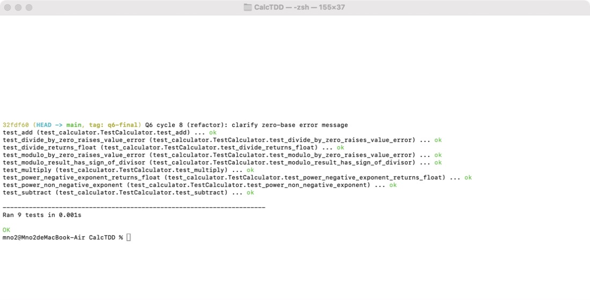

Questions 1 and 6 (required). Language: Python 3.14.7, unittest. Repository: CalcTDD/.
Starting point: a Calculator class with only add plus the provided CalcTest.py (commit bce4751). The provided Calc.py already contained all four operations, so it was not used as the starting point; doing so would leave nothing for the tests to drive. Each cycle has a red commit (test only) and a green commit (implementation).
Test. test_subtract checks subtract(5, 3) == 2 and subtract(3, 5) == -2, so negative results are part of the requirement.
Red output:
======================================================================
ERROR: test_subtract (test_calculator.TestCalculator.test_subtract)
----------------------------------------------------------------------
Traceback (most recent call last):
File "/Users/mno2/Desktop/碩士/project/software_testing/CalcTDD/test_calculator.py", line 12, in test_subtract
self.assertEqual(calc.subtract(5, 3), 2)
^^^^^^^^^^^^^
AttributeError: 'Calculator' object has no attribute 'subtract'
----------------------------------------------------------------------
Ran 2 tests in 0.001s
FAILED (errors=1)
Change to pass. It failed with AttributeError because Calculator had no subtract. Added subtract(a, b) returning a - b.
Green output:
Ran 2 tests in 0.000s OK
Refactoring. None.
Test. test_multiply checks a positive product, a negative operand and multiplication by zero.
Red output:
======================================================================
ERROR: test_multiply (test_calculator.TestCalculator.test_multiply)
----------------------------------------------------------------------
Traceback (most recent call last):
File "/Users/mno2/Desktop/碩士/project/software_testing/CalcTDD/test_calculator.py", line 17, in test_multiply
self.assertEqual(calc.multiply(4, 3), 12)
^^^^^^^^^^^^^
AttributeError: 'Calculator' object has no attribute 'multiply'
----------------------------------------------------------------------
Ran 3 tests in 0.001s
FAILED (errors=1)
Change to pass. Failed with AttributeError. Added multiply(a, b) returning a * b.
Green output:
Ran 3 tests in 0.000s OK
Refactoring. None.
Test. Before writing any division code, the integer-or-float decision was encoded: divide(7, 2) == 3.5 rules out integer division, and assertIsInstance(divide(6, 3), float) requires a float even for exact quotients.
Red output:
======================================================================
ERROR: test_divide_returns_float (test_calculator.TestCalculator.test_divide_returns_float)
----------------------------------------------------------------------
Traceback (most recent call last):
File "/Users/mno2/Desktop/碩士/project/software_testing/CalcTDD/test_calculator.py", line 23, in test_divide_returns_float
self.assertEqual(calc.divide(6, 3), 2.0)
^^^^^^^^^^^
AttributeError: 'Calculator' object has no attribute 'divide'
----------------------------------------------------------------------
Ran 4 tests in 0.000s
FAILED (errors=1)
Change to pass. Failed with AttributeError. Added divide(a, b) returning a / b (true division).
Green output:
Ran 4 tests in 0.000s OK
Refactoring. None.
Test. test_divide_by_zero_raises_value_error requires divide(5, 0) to raise ValueError. ValueError was chosen over Python's native ZeroDivisionError so that the calculator reports invalid input through one exception type; it also makes this test genuinely red, because the cycle 3 code already raised ZeroDivisionError.
Red output:
======================================================================
ERROR: test_divide_by_zero_raises_value_error (test_calculator.TestCalculator.test_divide_by_zero_raises_value_error)
----------------------------------------------------------------------
Traceback (most recent call last):
File "/Users/mno2/Desktop/碩士/project/software_testing/CalcTDD/test_calculator.py", line 30, in test_divide_by_zero_raises_value_error
calc.divide(5, 0)
~~~~~~~~~~~^^^^^^
File "/Users/mno2/Desktop/碩士/project/software_testing/CalcTDD/calculator.py", line 12, in divide
return a / b
~~^~~
ZeroDivisionError: division by zero
----------------------------------------------------------------------
Ran 5 tests in 0.001s
FAILED (errors=1)
Change to pass. Failed with ZeroDivisionError, a different exception than required. Added a b == 0 guard that raises ValueError("Cannot divide by zero").
Green output:
Ran 5 tests in 0.000s OK
Refactoring. None in the production code.
Every test created its own Calculator(). The fixture was moved to setUp (commit 2c8eb33) and the redundant result variable in test_add was inlined. All 5 tests passed before and after.
Final Q1 test run:
test_add (test_calculator.TestCalculator.test_add) ... ok test_divide_by_zero_raises_value_error (test_calculator.TestCalculator.test_divide_by_zero_raises_value_error) ... ok test_divide_returns_float (test_calculator.TestCalculator.test_divide_returns_float) ... ok test_multiply (test_calculator.TestCalculator.test_multiply) ... ok test_subtract (test_calculator.TestCalculator.test_subtract) ... ok ---------------------------------------------------------------------- Ran 5 tests in 0.000s OK
Agent. Claude Code 2.1.289 (desktop app, Code tab), model Claude Opus 5.5 (claude-opus-5-5).
Process. For each cycle the agent wrote one test, ran the suite and showed the red output, then stopped and asked me to review the test. After my approval it committed the test alone (commit message marked test, reviewed), then wrote the implementation in a separate commit (impl), and any refactoring in a third commit.
Before writing any modulo or power test, the agent asked me four questions. My answers:
| Question | My decision | Test that encodes it |
|---|---|---|
| Modulo with a negative operand | Result has the sign of the divisor (Python %): modulo(-7, 3) == 2 | cycle 5 |
| Modulo by zero | Raise ValueError | cycle 6 |
power(0, 0) | Return 1 | cycle 7 |
| Negative exponent | Return a float, e.g. power(2, -1) == 0.5; power(0, -1) raises ValueError | cycle 8 |
Test. test_modulo_result_has_sign_of_divisor: modulo(7, 3) == 1, modulo(-7, 3) == 2, modulo(7, -3) == -2, modulo(-7, -3) == -1. All four sign combinations are covered so that a truncating implementation (C/Java %, math.fmod) would fail.
Failing output before any implementation:
======================================================================
ERROR: test_modulo_result_has_sign_of_divisor (test_calculator.TestCalculator.test_modulo_result_has_sign_of_divisor)
----------------------------------------------------------------------
Traceback (most recent call last):
File "/Users/mno2/Desktop/碩士/project/software_testing/CalcTDD/test_calculator.py", line 31, in test_modulo_result_has_sign_of_divisor
self.assertEqual(self.calc.modulo(7, 3), 1)
^^^^^^^^^^^^^^^^
AttributeError: 'Calculator' object has no attribute 'modulo'
----------------------------------------------------------------------
Ran 6 tests in 0.000s
FAILED (errors=1)
My review. Approved without changes. The four expected values match the decision I made beforehand (result takes the sign of the divisor).
Agent's change. Added modulo(a, b) returning a % b (commit ac51606).
Green output:
Ran 6 tests in 0.000s OK
Refactoring. None.
Test. test_modulo_by_zero_raises_value_error: modulo(5, 0) must raise ValueError, the same contract as divide.
Failing output before any implementation:
======================================================================
ERROR: test_modulo_by_zero_raises_value_error (test_calculator.TestCalculator.test_modulo_by_zero_raises_value_error)
----------------------------------------------------------------------
Traceback (most recent call last):
File "/Users/mno2/Desktop/碩士/project/software_testing/CalcTDD/test_calculator.py", line 39, in test_modulo_by_zero_raises_value_error
self.calc.modulo(5, 0)
~~~~~~~~~~~~~~~~^^^^^^
File "/Users/mno2/Desktop/碩士/project/software_testing/CalcTDD/calculator.py", line 17, in modulo
return a % b
~~^~~
ZeroDivisionError: division by zero
----------------------------------------------------------------------
Ran 7 tests in 0.001s
FAILED (errors=1)
My review. Approved without changes. The test was red for the right reason: the cycle 5 code raised ZeroDivisionError, not ValueError.
Agent's change. Added a zero guard to modulo (commit f536e03).
Green output:
Ran 7 tests in 0.000s OK
Refactoring. divide and modulo now had identical guards, so the agent extracted _require_nonzero(b, operation) in a separate commit (f4b0317). Tests were not touched and were green before and after.
Test. test_power_non_negative_exponent: power(2, 3) == 8, power(-2, 3) == -8, power(5, 0) == 1 and the decided edge case power(0, 0) == 1.
Failing output before any implementation:
======================================================================
ERROR: test_power_non_negative_exponent (test_calculator.TestCalculator.test_power_non_negative_exponent)
----------------------------------------------------------------------
Traceback (most recent call last):
File "/Users/mno2/Desktop/碩士/project/software_testing/CalcTDD/test_calculator.py", line 42, in test_power_non_negative_exponent
self.assertEqual(self.calc.power(2, 3), 8)
^^^^^^^^^^^^^^^
AttributeError: 'Calculator' object has no attribute 'power'
----------------------------------------------------------------------
Ran 8 tests in 0.001s
FAILED (errors=1)
My review. Approved without changes.
Agent's change. Added power(a, b) returning a ** b (commit 626aa52).
Green output:
Ran 8 tests in 0.000s OK
Refactoring. None.
Test. test_power_negative_exponent_returns_float: power(2, -1) == 0.5, power(2, -2) == 0.25, the result is a float, and power(0, -1) raises ValueError because it is a division by zero.
Failing output before any implementation:
======================================================================
ERROR: test_power_negative_exponent_returns_float (test_calculator.TestCalculator.test_power_negative_exponent_returns_float)
----------------------------------------------------------------------
Traceback (most recent call last):
File "/Users/mno2/Desktop/碩士/project/software_testing/CalcTDD/test_calculator.py", line 55, in test_power_negative_exponent_returns_float
self.calc.power(0, -1)
~~~~~~~~~~~~~~~^^^^^^^
File "/Users/mno2/Desktop/碩士/project/software_testing/CalcTDD/calculator.py", line 20, in power
return a ** b
~~^^~~
ZeroDivisionError: zero to a negative power
----------------------------------------------------------------------
Ran 9 tests in 0.001s
FAILED (errors=1)
My review. Approved without changes. The first three assertions already passed with a ** b; the test was red only because of power(0, -1), which raised ZeroDivisionError. I accepted this because the float result is still pinned down by the test and cannot regress silently.
Agent's change. Added a guard: when b < 0, call _require_nonzero(a, ...) (commit d1e4872).
Green output:
Ran 9 tests in 0.000s OK
Refactoring. The error message read awkwardly, so the agent reworded the message string only (commit 32fdf60). Tests unchanged, green before and after.
Rule breaks by the agent: none observed. In all four cycles the test commit precedes the implementation commit in the git log, every red run was shown before implementation, and no committed test was edited or deleted afterwards (git log -p -- test_calculator.py after f7ddfd5 shows additions only).
Decisions the agent made without asking me:
power(0, -1) behavior: I chose it, but the option text I chose from ("return a float; power(0, -1) raises ValueError") was written by the agent, so the agent bundled this sub-decision into the negative-exponent option.power returns an int for non-negative integer exponents. assertEqual(power(2, 3), 8) would also accept 8.0, so this is not pinned down by any test.modulo and power. Not tested.f4b0317, 32fdf60). These touched production code only.Also for transparency: Question 1 was carried out by the same agent in the same session. Its decisions there (float division, ValueError on division by zero) were made by the agent without asking me; I reviewed and kept them.
import unittest
from calculator import Calculator # The class we are going to implement
class TestCalculator(unittest.TestCase):
def setUp(self):
self.calc = Calculator()
def test_add(self):
self.assertEqual(self.calc.add(2, 3), 5) # Expect 2 + 3 = 5
def test_subtract(self):
self.assertEqual(self.calc.subtract(5, 3), 2)
self.assertEqual(self.calc.subtract(3, 5), -2) # negative results are allowed
def test_multiply(self):
self.assertEqual(self.calc.multiply(4, 3), 12)
self.assertEqual(self.calc.multiply(-4, 3), -12)
self.assertEqual(self.calc.multiply(7, 0), 0)
def test_divide_returns_float(self):
self.assertEqual(self.calc.divide(6, 3), 2.0)
self.assertEqual(self.calc.divide(7, 2), 3.5) # true division, not 3
self.assertIsInstance(self.calc.divide(6, 3), float)
def test_divide_by_zero_raises_value_error(self):
with self.assertRaises(ValueError):
self.calc.divide(5, 0)
def test_modulo_result_has_sign_of_divisor(self):
# Decision (user): Python/floor semantics, result takes the divisor's sign
self.assertEqual(self.calc.modulo(7, 3), 1)
self.assertEqual(self.calc.modulo(-7, 3), 2)
self.assertEqual(self.calc.modulo(7, -3), -2)
self.assertEqual(self.calc.modulo(-7, -3), -1)
def test_modulo_by_zero_raises_value_error(self):
# Decision (user): same contract as divide, ValueError instead of ZeroDivisionError
with self.assertRaises(ValueError):
self.calc.modulo(5, 0)
def test_power_non_negative_exponent(self):
self.assertEqual(self.calc.power(2, 3), 8)
self.assertEqual(self.calc.power(-2, 3), -8)
self.assertEqual(self.calc.power(5, 0), 1)
# Decision (user): power(0, 0) is 1, following programming-language convention
self.assertEqual(self.calc.power(0, 0), 1)
def test_power_negative_exponent_returns_float(self):
# Decision (user): negative exponent gives a float reciprocal
self.assertEqual(self.calc.power(2, -1), 0.5)
self.assertEqual(self.calc.power(2, -2), 0.25)
self.assertIsInstance(self.calc.power(2, -1), float)
# 0 to a negative power is 1/0, so it follows the ValueError contract of divide
with self.assertRaises(ValueError):
self.calc.power(0, -1)
if __name__ == "__main__":
unittest.main()class Calculator:
def add(self, a, b):
return a + b
def subtract(self, a, b):
return a - b
def multiply(self, a, b):
return a * b
def divide(self, a, b):
self._require_nonzero(b, "divide")
return a / b
def modulo(self, a, b):
self._require_nonzero(b, "take modulo")
return a % b
def power(self, a, b):
if b < 0:
self._require_nonzero(a, "raise zero to a negative power, which would divide")
return a ** b
@staticmethod
def _require_nonzero(b, operation):
if b == 0:
raise ValueError(f"Cannot {operation} by zero")bce4751 2026-10-22 00:25 Q1 baseline: Calculator with add() and its test d9ef353 2026-10-22 00:26 Q1 cycle 1 (red): test subtract 6546dd7 2026-10-22 00:26 Q1 cycle 1 (green): implement subtract 66934be 2026-10-22 00:26 Q1 cycle 2 (red): test multiply 31d4bef 2026-10-22 00:26 Q1 cycle 2 (green): implement multiply cdcc48d 2026-10-22 00:26 Q1 cycle 3 (red): test divide returns float 165782b 2026-10-22 00:26 Q1 cycle 3 (green): implement divide with true division 812cca3 2026-10-22 00:26 Q1 cycle 4 (red): test divide by zero raises ValueError 1c48190 2026-10-22 00:26 Q1 cycle 4 (green): guard divide against zero 2c8eb33 2026-10-22 00:26 Q1 refactor: share Calculator fixture via setUp f7ddfd5 2026-10-22 15:02 Q6 cycle 5 (test, reviewed): modulo result takes sign of divisor ac51606 2026-10-22 15:02 Q6 cycle 5 (impl): modulo via Python % 318a5ff 2026-10-23 13:32 Q6 cycle 6 (test, reviewed): modulo by zero raises ValueError f536e03 2026-10-23 13:32 Q6 cycle 6 (impl): guard modulo against zero f4b0317 2026-10-23 13:32 Q6 cycle 6 (refactor): extract shared zero-divisor guard badab1e 2026-10-23 14:14 Q6 cycle 7 (test, reviewed): power with non-negative exponent, power(0, 0) == 1 626aa52 2026-10-23 14:14 Q6 cycle 7 (impl): power via Python ** 05f11c9 2026-10-23 14:14 Q6 cycle 8 (test, reviewed): negative exponent returns float, power(0, -1) raises ValueError d1e4872 2026-10-23 14:14 Q6 cycle 8 (impl): reject zero base with negative exponent 32fdf60 2026-10-23 14:14 Q6 cycle 8 (refactor): clarify zero-base error message
test_add (test_calculator.TestCalculator.test_add) ... ok test_divide_by_zero_raises_value_error (test_calculator.TestCalculator.test_divide_by_zero_raises_value_error) ... ok test_divide_returns_float (test_calculator.TestCalculator.test_divide_returns_float) ... ok test_modulo_by_zero_raises_value_error (test_calculator.TestCalculator.test_modulo_by_zero_raises_value_error) ... ok test_modulo_result_has_sign_of_divisor (test_calculator.TestCalculator.test_modulo_result_has_sign_of_divisor) ... ok test_multiply (test_calculator.TestCalculator.test_multiply) ... ok test_power_negative_exponent_returns_float (test_calculator.TestCalculator.test_power_negative_exponent_returns_float) ... ok test_power_non_negative_exponent (test_calculator.TestCalculator.test_power_non_negative_exponent) ... ok test_subtract (test_calculator.TestCalculator.test_subtract) ... ok ---------------------------------------------------------------------- Ran 9 tests in 0.000s OK
Screenshot of the terminal run at commit 32fdf60 (tag q6-final):

Tool: Claude Code 2.1.289, Claude desktop app (Code tab). Model: Claude Opus 5.5 (claude-opus-5-5). Used for: Questions 1 and 6.
Prompts, verbatim. The session started with the six attached files and this prompt:
請幫我完成這份作業，我已經在chrome登入了 請你幫我把檔案載下來並且開始實作 https://e3p.nycu.edu.tw/mod/assign/view.php?id=245389
All later inputs were my answers to the agent's multiple-choice questions:
| Agent question | My answer |
|---|---|
| modulo 遇到負數運算元時，結果要採哪種語意？ | 跟除數同號 (Python %) |
| modulo 除以零要怎麼處理？ | 丟 ValueError |
| power(0, 0) 要回傳什麼？ | 回傳 1 |
| power 遇到負指數要回傳什麼？ | 回傳 float |
| Cycle 5 to 8 test reviews (four questions) | 通過，commit (all four) |
Full agent responses: see the exported session transcript attached with this report.